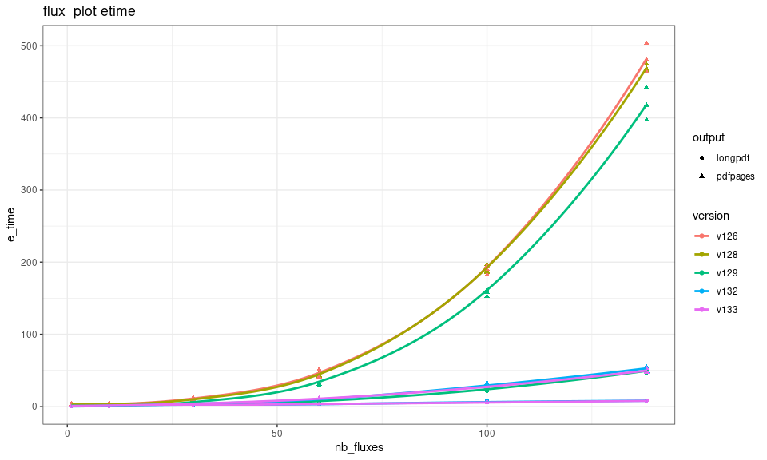

Joseph Gaudard 2025-10-15
Current fluxible package version: 1.3.4
flux_plot
plotting_etime <- function(version, nb_fluxes = c(1, 5, 10, 20, 30, 40, 50, 60, 70, 80, 90, 100, 110, 120, 130, 138),
replicates = 3, output = c("pdfpages", "longpdf")) {
result <- replicate(n = replicates, expr = {
map(nb_fluxes, \(x) {
test_df <- flags_liahovden |>
filter(
f_fluxid %in% sample(c(1:138), x)
)
map(output, \(f) {
time <- system.time(
{
test_df |>
flux_plot(
f_conc = conc,
f_datetime = datetime,
f_ylim_upper = 600, # upper limit of y-axis
f_ylim_lower = 350, # lower limit of x-axis
y_text_position = 450, # position of text with flags and diagnostics
output = f,
f_plotname = "test"
)
})
tibble(e_time = time["elapsed"], output = f)
}) |>
list_rbind() |>
mutate(
nb_fluxes = x
)
}) |>
list_rbind()
}, simplify = FALSE) |>
list_rbind() |>
mutate(
version = version
)
result
}
Figure 1: Performance of flux_plot per version and output.
flux_fitting
fitting_etime <- function(version, nb_fluxes = c(1, 5, 10, 20, 30, 40, 50, 60, 70, 80, 90, 100, 110, 120, 130, 138),
replicates = 3, fit_type = c("exp_zhao18", "linear", "quadratic", "exp_tz")) {
result <- replicate(n = replicates, expr = {
map(nb_fluxes, \(x) {
test_df <- conc_liahovden |>
filter(
f_fluxid %in% sample(c(1:138), x)
)
map(fit_type, \(f) {
time <- system.time(
{
test_df |>
flux_fitting(
f_conc = conc, # gas concentration column
f_datetime = datetime, # date and time column
fit_type = f, # the model to fit to the gas concentration
)
})
tibble(e_time = time["elapsed"], fit_type = f)
}) |>
list_rbind() |>
mutate(
nb_fluxes = x
)
}) |>
list_rbind()
}, simplify = FALSE) |>
list_rbind() |>
mutate(
version = version
)
result
}Figure 2: Performance of flux_fitting per version and model.